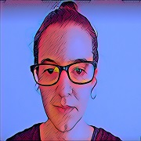

Somos un equipo de mujeres internacional y diverso. Un equipo de soñadoras
a las que nos une nuestro espíritu creativo y nuestro amor por el medio
ambiente. No nos da miedo el cambio.
Sabemos que tenemos capacidad para florecer en este nuevo mundo en el que
nos hemos sumergido, confiamos en nuestra capacidad para aportar, definir
y desarrollar con autonomía.
Equipo
Fortalezas
Nos caracterizamos por afrontar sin miedo los nuevos retos que se nos avecinan, no tememos a los cambios y por ello, estamos listas para el trabajo en remoto.
Trabajamos con ilusión y somos capaces de adaptarnos a las necesidades de cada proyecto en cada momento, gracias a nuestra empatía y compromiso.
Como equipo, nuestros conocimientos previos en diferentes sectores profesionales, nos permiten aportar diferentes visiones y complementarnos las unas a las otras, esto hace que seamos capaces de trabajar en equipo.
Debilidades
Somos nuevas en este sector y no contamos con experiencia profesional como front-end, pero a pesar de la falta de experiencia creemos que podemos lograr aquello que nos propongamos, ya que nos consideramos perfeccionistas y vamos a trabajar muchísimo para conseguirlo.
Quiénes somos

Nuria Díaz
Me considero organizada, observadora y responsable. Además, cuando me deshago de mi capa de invisibilidad (por mi absurda timidez), me gusta generar un buen clima en el entorno en el que me encuentro. Me licencié en Administración y Dirección de Empresas y realicé un postgrado en contabilidad, pero tras unas cuantas decepciones profesionales me di cuenta que no era lo que buscaba. Apasionada de las cobayas, los puzzles y de tomar cervecitas en terrazas con amigos.

Lucia Mezquida
Siempre me ha gustado aprender cosas nuevas. Tras 13 años como farmacéutica comunitaria, mi espíritu curioso se retorcía por descubrir nuevos horizontes. Y así llegué a la programación, donde el horizonte nunca termina, y donde al fín puedo desarrollar mi capacidad creativa y reinventarme.
Me escapo a la montaña siempre que puedo, soy una apasionada del snowboard y una animalista irremediable.

Yanira Fernández
Aunque empecé mis estudios en biología, la vida me llevó a acabar trabajando en sectores muy diferentes. Habiendo tenido siempre afición por la informática, descubrí recientemente mi vocación por la programación, lo que me decidió a dar un giro a mi vida y embarcarme en un sector que realmente me apasiona.
Ecologista, gamer, guitarrista y dibujante aficionada. Y por supuesto, amante de la biología.

Irina Tveritneva
Knowmad@ 100%. Me encanta resolver los problemas humanos con la mejor tecnología del mercado y con una actitud muy positiva. Moscovita de origen, madrileña de hecho y con el corazón asturiano. Tengo experiencia en ventas y desarrollo de distintos negocios en América Latina, Rusia y España. Me encanta aprender idiomas, hasta el día de hoy hablo 7 :) Y ahora estoy aprendiendo unos más: HTML, CSS, JS ...to be continued Amante de los gatos, baile, bici y vida deportiva en general. Hago actividades de voluntariado de medio ambiente y aportación social. La mañana me gusta empezarla con unos minutos de meditación, yoga y un buen desayuno.